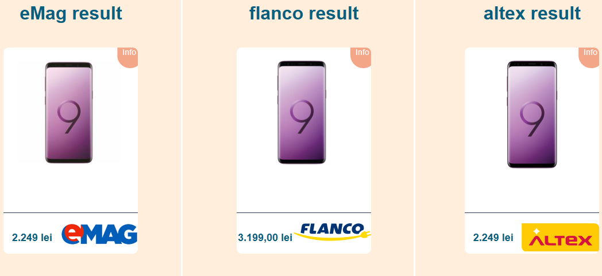

Despre acest site
Această aplicație are ca scop să vină în ajutorul userilor care își doresc să cumpere un produs
și își doresc să vadă care este cel mai bun preț pe care il pot obține la 3 dintre cele mai mari
magazine online din România. BuyCheap permite userilor să caute un produs iar aplicația va economisi
timpul userului căutând prețul acelui obiect pe cele 3 site-uri.
Un alt feature important al aplicației este acela că permite userilor să adauge un produs la lista lor
de favorite, fapt care va face ca acesta să fie anunțat prin e-mail atunci când prețul produsului scade
sau când produsul apare din nou în stoc la unul din cele trei magazine.
Furnizorii produselor
Pentru a afișa prețurile produselor și detalii despre acestea aplicația caută produsul dorit de către utilizator
la cele trei magazine și preia de la acestea rezultatele căutării iar apoi le aduce în interfața aplicației.
Deocamdată aplicația aduce produse doar de pe 3 magazine online iar acestea sunt: Emag, Altex și Flanco
Cum se folosește aplicația

Userii trebuie să iși creeze un cont nou sau să se logheze în contul lor pentru a putea avea acces la funcționalitățile
aplicației. După logare userii pot accesa pagina de căutare iar acolo vor introduce numele produsului ale cărui oferte
își dorește să le vadă. Odată ce căutarea este executată și detaliile despre produse sunt aduse despre cele trei site-uri
menționate mai sus, site-ul va afișa o listă cu toate produsele găsite așa cum se poate vedea în imaginea alăturată.
De ce să alegi acest site și nu altul?
Un astfel de site există deja în România, iar acesta este www.compari.ro , insă pe acest site se compară prețul produsului
de pe 200 alte site-uri partenere. Un număr mai mare de site-uri, deși sună a o idee bună, îngreunează probabilitatea de a vedea
ofertele disponibile pe cele mai mari site-uri de e-commerce din România. De multe ori nu putem avea încredere în anumite site-uri
mai ales dacă nu sunt prea cunoscute sau dacă au multe reviewuri negative asă că multă lume preferă să comande lucruri de pe niște
site-uri mai mari. Faptul că am ales doar aceste trei site-uri îmi permite să adaug posibilitatea de a vedea dacă obiectul pe care
userul îl caută poate fi găsit în orașul in care se află, fapt care va aduce ceva în plus aplicației mele față de cea de pe www.compari.ro.
De asemenea, aplicația BuyCheap permite userilor să adauge anumite produse la lista de favorite și să aleagă să fie notificați când prețul
unui produs favorit scade sau când un produs apare în stoc la unul din cele trei magazine.